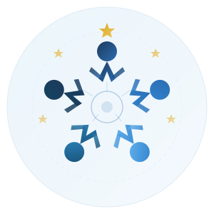

Sobre o Projeto
A Escola de Governo de Pedro Leopoldo (EGov-PL) foi criada com o objetivo de promover a capacitação contínua dos servidores públicos municipais, alinhada às diretrizes de modernização, desburocratização e eficiência administrativa.
A Escola de Governo representa o compromisso da Prefeitura com a valorização do servidor e a qualidade dos serviços prestados à população. Sua missão é promover um ambiente de aprendizado contínuo, incentivando a inovação e as melhores práticas de administração pública.
O projeto representa um marco na capacitação profissional do serviço público municipal, oferecendo formação de qualidade em temas estratégicos para a gestão pública, desde governança e ética até licitações e atendimento ao cidadão.
Princípios Norteadores
Formação permanente dos servidores públicos.
Modernização das práticas de gestão pública.
Compromisso com a ética e a prestação de contas.
Desenvolvimento profissional e bem-estar.
Metodologia da EGov-PL

Formação em Trilhas
A aprendizagem é organizada em trilhas temáticas, de forma sistêmica, progressiva e orientada a competências.
- Instrutores selecionados
- Comunidades de aprendizagem
- Intercâmbio de boas práticas entre órgãos e instituições públicas parceiras